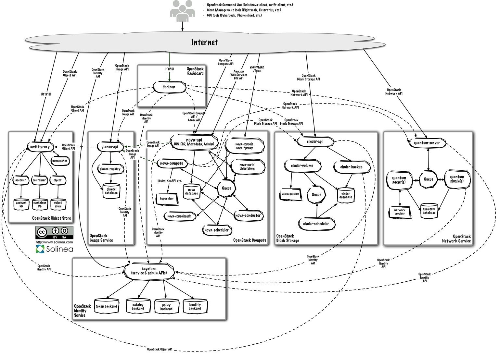

TripleO: Openstack on Openstack
Joe Gordon
About Me
 Developer @
Developer @

- nova-core
- TripleO

Cloud enables Velocity
- Fast resource allocation
- Agility
- Develop, Test and Deploy in Cloud
Lots of happy users...
But...
It's hard to deploy and upgrade
OpenStack is Complex!
wouldn't it be nice if...
OpenStack was easier to deploy
Introducing tripleo
OpenStack on Openstack
OpenStack's official Deploymant program
TripleO
"TripleO is the use of a self hosted OpenStack infrastructure - that is OpenStack bare metal (nova and cinder) + Heat + diskimage-builder + in-image orchestration such as Chef or Puppet - to install, maintain and upgrade itself."
TripleO
Issues we are trying to address
- Bugs
- Continuous Integration and Delivery
- Common API and codebase for the cloud and under the cloud
- Standardize installation and upgrade process
- Entropy/Cruft -- Golden Images
- Hardware Failure -- High Availability setup
Puzzle Pieces
Provisioning: Nova baremetal
Software: Disk images
Golden Images
- Encapsulate a known good set of software
- Excludes configuration and persistent state
- Equivalent of packages at the cluster level
- Each image can be tested and deployed as-is
- Small focused tool-chain to build images
configuration: os-apply-config
Combines metadata delivered to instance from cloud with templates shipped with image to produce usable configuration files.
Small utility designed specifically to move Tripleo forward without tying reference implementation to specific configuration management solution.
You can use chef/puppet/salt here instead if you prefer.
state: os-refresh-config
Triggered when when metadata is updated: responsible for restarting services, coordinating data migration, and signalling completion to Heat.
phases
pre-configure
configure
migration
post-configure
orchestration: heat
- Supports any CM system within a machine
- Delivers configuration metadata to machines
- github.com/openstack/tripleo-heat-templates
Underclouds and Overclouds
Undercloud
- Fully HA baremetal cloud
- Self hosted
- Aiming for two control nodes
- Additional nodes are for overcloud tenants
Overcloud
- Fully HA KVM based OpenStack hosted by the undercloud
- Orchestrated by Heat running in the undercloud
- Can (optionally) use the same disk images for most service

Installation
- Create a bootstrap node that is bridged to the datacenter network.
- Enroll your machines.
- Tell heat to deploy your HA OpenStack templates.
- Heat drives the Nova API to scale out the cloud.
- Switch off the bootstrap node.
- Tell Heat to recover from the loss of the VM node
- Deploy the overcloud as a undercloud tenant
managing your deployment
When events occur that change our state, heat triggers will fire causing the system to respond appropriately.
Rolling backwards becomes as simple as rolling forward: simply deploy the old image.
Prevent entropy by managing your cloud the cloud way:
Store data and persistent state in persistent volume.
new possibilities and practical applications
- Clouds in clouds: Multi-cloud tenancy.
-
Integrate this as a part of CI/CD infrastructure - deploy and test entire cloud in production-like environment on every commit.
- More clouds for everyone!
Does this work today?
What problems are left to solve?
We can do this today!
and we do
just lacking polish
- No persistent storage (Cinder) yet.
- Rolling / canary updates in Heat.
- Upgrade nova-compute without taking VMs down.
- Rudimentary HA support
- Robustness across OpenStack against: bugs, hardware failure, network failure, etc.
Thank You
Questions?
github.com/openstack/tripleo-incubator
wiki.openstack.org/wiki/TripleO
#tripleo on freenode
Powered by reveal.js